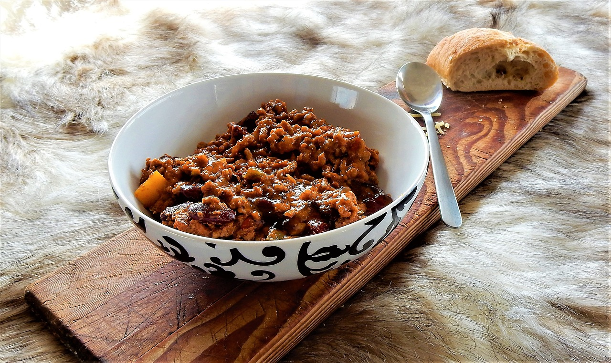

Chili Con Carne

Zubereitung
 ca 30 Minuten
ca 30 Minuten
Gesamtzeit ca 1 Stunde 15 Minuten
Die Zwiebeln abziehen, in Würfel schneiden und in einem tiefen Topf oder Bräter im Öl goldgelb anbraten. Hackfleisch zufügen, gut anbraten und Farbe nehmen lassen. Dabei ab und zu umrühren und das Hackfleisch zerkleinern.
Paprika putzen, in Würfel schneiden und zum Hackfleisch geben. Tomatenmark zufügen und etwas anrösten. Die Tomaten, den gepellten und zerkleinerten Knoblauch sowie Gewürze (Zucker, Salz, Pfeffer, Paprika, Tabasco, Chili oder Cayenne) zugeben. Allerdings lieber erst einmal etwas vorsichtiger würzen und gegebenenfalls nach der Kochzeit nachwürzen. Mit Brühe auffüllen und bei mittlerer Hitze 30 - 45 Minuten einkochen lassen, ist die Flüssigkeit verkocht, immer wieder Brühe angießen.
Kurz vor Ende der Garzeit Bohnen und Mais aus der Dose befreien, gründlich abspülen und zufügen. Diese nur kurz wenige Minuten mitgaren. Anschließend alles noch einmal abschmecken und gegebenenfalls nachwürzen. Am besten schmeckt ein Chili gut durchgezogen, ist also wunderbar am Tag vorher vorzubereiten!
Anrichten:
Chili con Carne in einem tiefen Teller oder einer Schüssel servieren. Dazu passt ein knuspriges Baguette, Tortillas oder Nachos.
Tipps: Wahlweise kann das Chili auch mit klein geschnittenem Fleisch und frischen Chilischoten zubereitet werden.
Wer seinem "normalen" Chili einmal eine etwas andere Geschmacksrichtung geben möchte, verfeinert das obige Rezept mit einem Teelöffel Kreuzkümmel, einem Esslöffel dunklem Kakaopulver und einem doppelten Espresso!
Guten Appetit! 😋
 simpel
simpel
 01.10.2023
01.10.2023